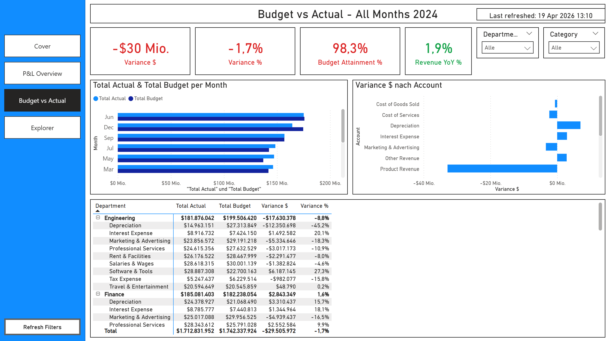
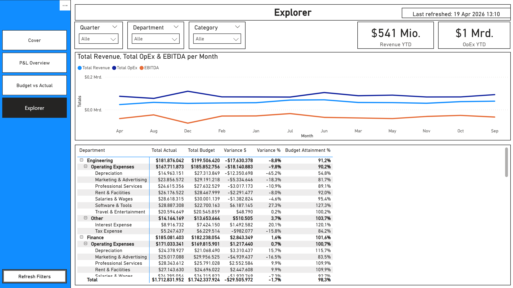

← Back to Portfolio

Finance Performance Dashboard
The Challenge
Finance teams spend hours in spreadsheets comparing actuals to budget, building P&L summaries, and tracking departmental spend. They need a single source of truth that shows where the business stands financially - updated automatically, accessible to leadership, and drillable to the account level.
The Solution
A 3-page interactive Power BI report built on a star schema with chart of accounts, departments, and a proper date table. 26 DAX measures covering the full P&L waterfall, budget variance analysis, and year-over-year comparisons.
Report Pages
- P&L Overview - Revenue, Gross Profit, Margin%, and EBITDA KPIs. Monthly revenue trend vs prior year. OpEx breakdown by department. Full P&L matrix with actual, budget, variance $, and variance %.
- Budget vs Actual - Variance $, Variance %, Budget Attainment%, and YoY% KPIs with conditional formatting (green/red). Monthly actual vs budget clustered bar chart. Variance by account. Department-level detail matrix.
- Explorer - Free-form analysis with 5 slicers (Year, Quarter, Month, Department, Category). Revenue/OpEx/EBITDA trend line. Full drill-down matrix with all measures.


Data Model
- Star schema - fct_financials (monthly actuals + budget per account per department) surrounded by dim_account, dim_department, dim_date
- Chart of accounts - 14 accounts across Revenue, COGS, Operating Expenses, and Other categories with sign conventions
- Date table - marked as Date Table, spanning 2022-2026
- Relationships - many-to-one, single direction, all active
DAX Measures (26 total)
- P&L: Total Revenue, Total COGS, Gross Profit, Gross Margin %, Total OpEx, EBITDA, EBITDA Margin %, Net Income, Net Margin %
- Budget: Total Budget, Budget Revenue, Budget OpEx, Variance $, Variance %, Revenue Variance $, Revenue Variance %, Budget Attainment %
- Time intelligence: Revenue YTD, Revenue Prior Year, Revenue YoY %, OpEx YTD
- UX: Variance Colour, Revenue YoY Colour, P&L Page Title, Budget Page Title, Last Refreshed
Features
- Left navigation pane on every page
- Synced slicers across all pages
- Conditional formatting on variance and YoY KPI cards (green/red)
- Custom tooltip pages (hover for account/department detail)
- Reset Filters button
- Row-level security by department (sample "Department - Sales" role)
- Branded cover page with navigation button
- DIN font throughout
Deliverables
- .pbip project (PBIR + TMDL format, version-controllable)
- Sample CSV data (1,488 financial rows, 14 accounts, 6 departments)
- Setup guide with chart of accounts mapping